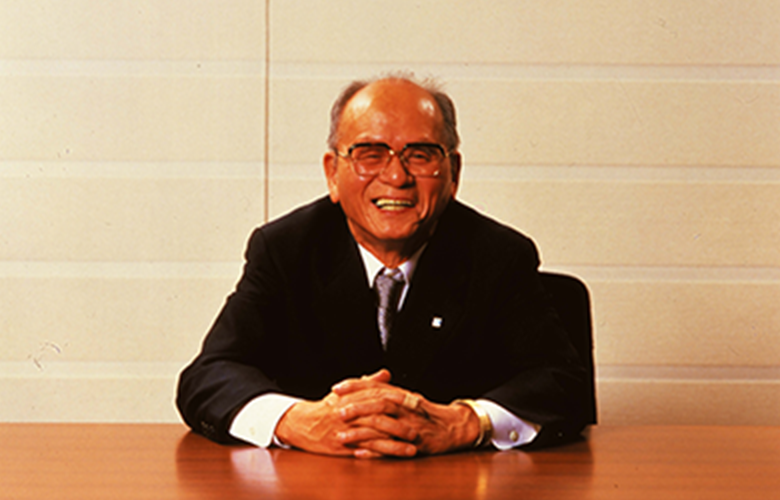
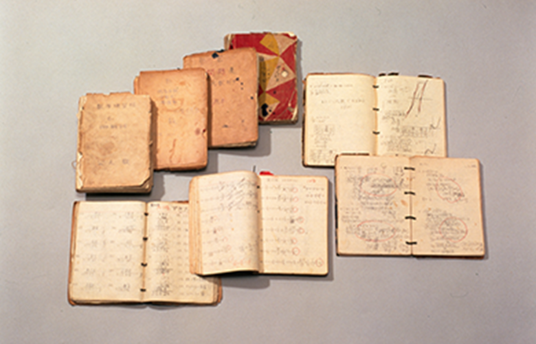
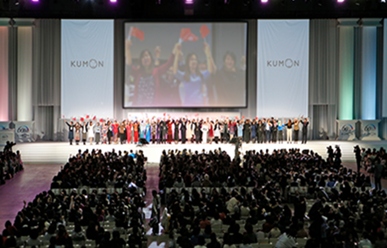

日本発祥の公文式学習法は、KUMONの創立から60余年を経て、国境を越えて様々な地域に広がってきました。また、これまで培ったノウハウを応用して、公文式教室事業のほかにも幅広い世代・対象に向けたサービスを展開しています。ここでは、広がりを続けるKUMONの事業についてご紹介します。
KNOWING KUMONKUMONを知る
MISSION
私たちには「夢」があります。
教育を通じて世界平和に貢献することです。
私たちは、個人別教育による人材の育成を通じて、
その夢の実現に向かってまいります。
公文の理念
われわれは
個々の人間に与えられている可能性を発見し
その能力を最大限に伸ばすことにより
健全にして有能な人材の育成をはかり
地球社会に貢献する
KUMONの歴史
「学ぶ力」は、やがて「生きる力」へ。一人の父親の、わが子への愛情から始まった公文式教育法。
半世紀以上が経った今も、その思想は脈々と受け継がれ、多くの子どもたちの「学ぶ力」を育み続けています。
- 1954年
- 当時、高校の数学教師だった公文 公（くもん とおる）が小学校２年生の長男のために計算問題をルーズリーフに書き、自習形式の学習を開始〈公文式の原型〉
- 
公文式創始者 公文 公
- 1955年
- 大阪府守口市に、公文式教材を使用した算数教室を開設
- 1958年
- 大阪数学研究会創立（現：公文教育研究会）
- 
- 1969年
- 国内学習者数1万人を超える
- 1974年
- 海外（ニューヨーク）で初めて算数教室を開設
- 1980年
- 英語教室スタート
- 1981年
- 国語教室スタート 国内学習者数100万を超える
- 2001年
- 全世界の学習者数300万を超える
- 2018年
- KUMON創立60周年
- 
公文式の特長
子どもたちの「やればできる」という自己肯定感を育み、未知の領域にも、自分から挑戦する力を培いたい。公文式は、一人ひとりの「可能性の追求」を目指す教育です。
STRENGTH
公文式は、「個人別・学力別学習」で、
一人ひとりの能力を最大限に伸ばします。
STRENGTH
教材を自分で読み、考え、解き進んでいく
「自学自習」形式で学習を進めていきます。
答えを自分で導き出していく力は、
やがて夢や目標に
挑戦する力になっていきます。
STRENGTH
公文式の教材は、
やさしい問題から高度な問題へ、
非常にきめ細かな「スモールステップ」で
構成されています。
STRENGTH
子どもたちが自分の力で伸びていくために、
「その子のできること」を見つけて、可能性を
引き出すのが「KUMONの指導者」です。
生徒数
| 40,000,000 | |
|---|---|
| 30,000,000 | |
| 20,000,000 | |
| 10,000,000 | |
| 0 |
全教科合計学習者数
ひとりでも多くの子どもたちに公文式で学ぶ機会を提供し、可能性を最大限に伸ばすことを目指しています。
教室数·指導者数
教室数
指導者数
国内における公文式教室の指導者は、社員ではなく、会社とフランチャイズ契約を結んでいる個人事業主です。
指導者は教室のオーナーでもあり、それぞれが経営上独立しています。
子どもをともに伸ばすパートナー
公文教育研究会
（2020年12月現在）
- 教材の提供
- 指導・運営の
サポート - 研修会の実施
日本16,100教室
- ロイヤルティ納入
- 生徒指導・
運営状況の報告 - 研修会への参加
拠点数
国内
海外
社員数
グループ全体
社員は、指導者と共に教室発展に取り組み、地域の子どもたちを伸ばします。子どもだけでなく関わるすべての人の成長を引き出すのがKUMONの社員の仕事です。
KNOWING PERSONS社員を知る
必要はありません。
それぞれの経験を活かしながら
活躍できるのが
KUMONの仕事です。
教育に関わりのなかった方も
多く活躍しています。
- 理念やビジョンが
魅力的である
- 社員や社風が
魅力的である
- 製品・サービスが
魅力的である
- 自分が関心のある事業／
分野に取り組んでいる
- その企業ならではの
強みが明確である
とらわれることはありません。
「社会に貢献したい」
「人の可能性を伸ばしたい」
大切にしてほしいのはその想いです。
- IT
- 13.5%
- メーカー
- 11.5%
- 金融
- 11.5%
- 食品
- 11.5%
- 人材
- 9.6%
- 独立行政法人
- 5.8%
- 卸売り・小売り
- 7.7%
- 大学院進学
- 3.8%
- 旅行
- 3.8%
- サービス
- 3.8%
- 通信
- 3.8%
- その他
- 13.5%
PHOTO GALLERYフォトギャラリー
{kind=link}
{kind=link}
{kind=link}
{kind=link}
{kind=link}
{kind=link}
{kind=link}
{kind=link}
キーワードから探す
気になるキーワードからコンテンツを検索できます。